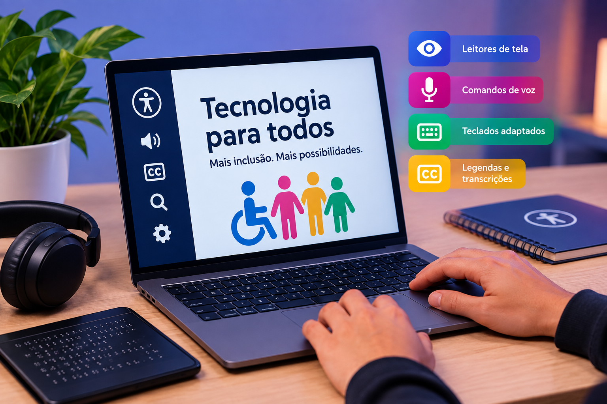
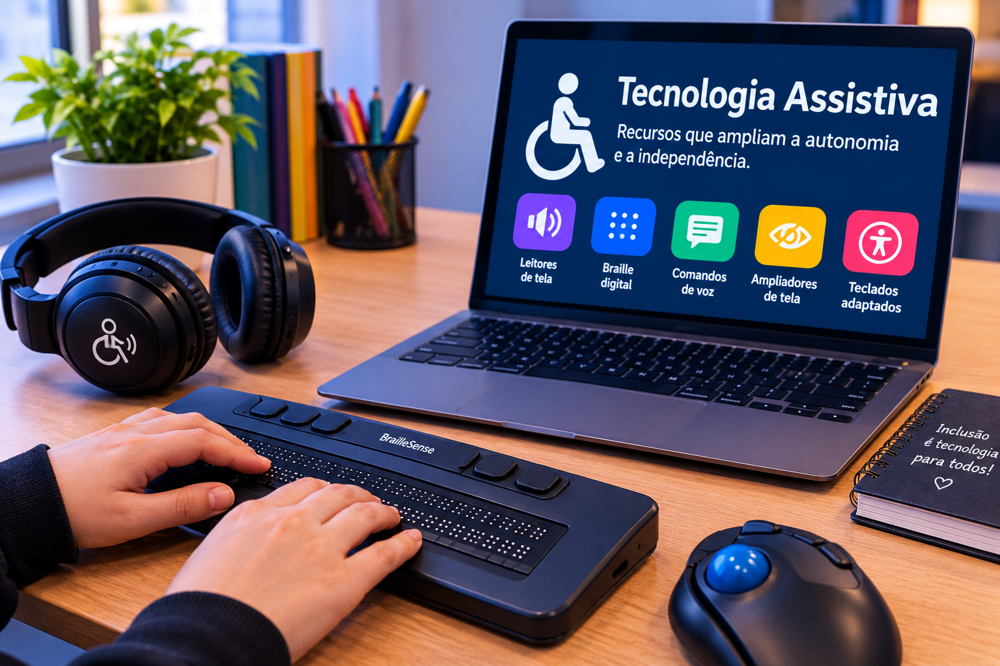
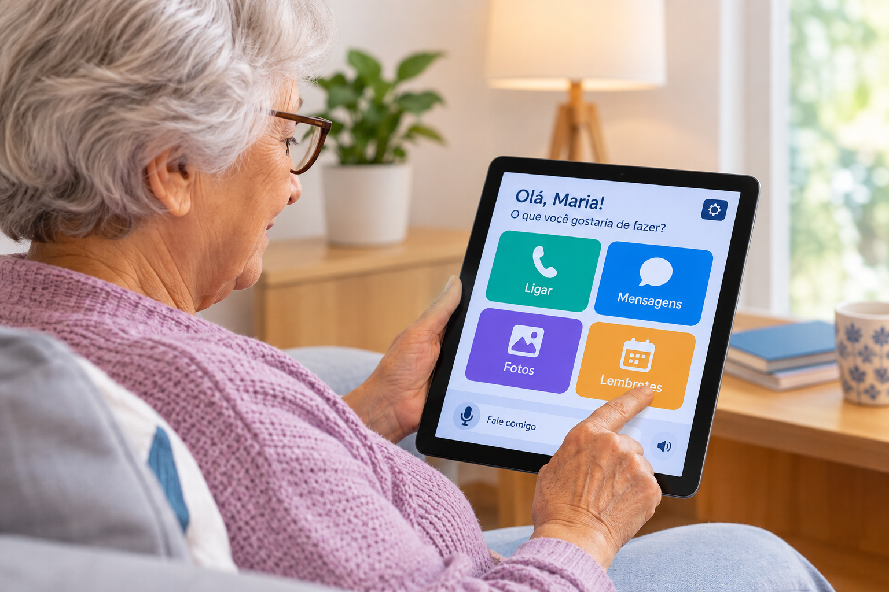

TECNOLOGIA PARA TODOS
Tecnologia só é para todos quando todos conseguem acessá-la.
A tecnologia está presente em quase todos os momentos da nossa vida. A acessibilidade digital ajuda a diminuir barreiras e tornar sites, aplicativos e ferramentas mais inclusivos.
Conheça a acessibilidadeO que é acessibilidade digital?
A acessibilidade digital busca tornar sites, aplicativos e tecnologias mais fáceis de utilizar por diferentes pessoas. Recursos como textos alternativos, legendas, bom contraste e navegação pelo teclado ajudam a reduzir barreiras.
Acessibilidade digital significa criar experiências que possam ser utilizadas por diferentes pessoas.

Barreiras digitais: quando a tecnologia exclui
Alguns sites e aplicativos podem criar dificuldades para seus usuários. Baixo contraste, imagens sem descrição, falta de legendas e páginas que não funcionam pelo teclado são exemplos de barreiras que podem dificultar o acesso à informação.
Uma barreira digital pode transformar uma tarefa simples em um grande desafio.
Tecnologia assistiva: ferramentas que ajudam
A tecnologia assistiva reúne recursos que ajudam pessoas a realizar atividades com mais autonomia. Leitores de tela, comandos de voz, teclados adaptados e legendas são alguns exemplos que facilitam o acesso à tecnologia.
A tecnologia pode remover barreiras quando é criada pensando em diferentes necessidades.

Vídeo: Tecnologia para Todos
Neste vídeo, apresentamos a importância da acessibilidade digital e de tecnologias pensadas para diferentes pessoas.
Ver transcrição completa
Vivemos em um mundo cada vez mais conectado. Mas será que a tecnologia está realmente disponível para todos? Sites, aplicativos e dispositivos podem apresentar barreiras que dificultam o acesso de muitas pessoas à informação e à comunicação. A acessibilidade digital busca remover essas barreiras.
Recursos como leitores de tela, legendas, navegação por teclado e bom contraste tornam a tecnologia mais inclusiva. A tecnologia assistiva também permite que pessoas com diferentes necessidades estudem, trabalhem, se comuniquem e tenham mais autonomia. Criar tecnologia para todos é uma responsabilidade.
Desenvolvedores e empresas precisam pensar na acessibilidade desde o início do projeto. A inteligência artificial também pode ajudar, criando legendas, descrevendo imagens e apoiando novas soluções. Mas seus resultados precisam ser revisados por pessoas para evitar erros e preconceitos.
Tecnologia de verdade é aquela que não deixa ninguém para trás. A inclusão começa quando criamos pensando em todas as pessoas. A acessibilidade digital busca tornar conteúdos mais fáceis de utilizar.
Leitores de tela, legendas e navegação por teclado são alguns exemplos. A tecnologia assistiva e a inteligência artificial podem ajudar ainda mais. Ponta a dar, mas é importante usá-las com responsabilidade.
A acessibilidade precisa fazer parte do desenvolvimento desde o começo, considerando as diferentes formas de interagir com a tecnologia. No final, tecnologia para todos significa inclusão, respeito e oportunidade.
Podcast
Neste episódio, conversamos sobre a importância da inclusão e da acessibilidade no mundo digital.
Ouvir e ler a transcrição
Transcrição do podcast:
Olá!
Hoje vamos falar sobre um assunto que está cada vez mais presente em nossas vidas, a tecnologia e a importância de torná-la acessível para todos.
Atualmente, usamos a tecnologia para praticamente tudo. Estudamos pela internet, conversamos com outras pessoas, trabalhamos, assistimos a vídeos, fazemos compras e buscamos informações usando celulares e computadores.
Porém, nem todas as pessoas conseguem utilizar esses recursos da mesma maneira. Para algumas pessoas, acessar um site, assistir a um vídeo ou utilizar um aplicativo pode ser difícil quando ele não foi desenvolvido pensando em diferentes necessidades. É nesse momento que entra a acessibilidade digital.
A acessibilidade busca diminuir essas barreiras e permitir que mais pessoas tenham autonomia para utilizar a tecnologia. Recursos como leitores de tela, legendas, descrição de imagens, navegação pelo teclado, contraste adequado e textos fáceis de compreender podem fazer uma grande diferença.
Imagine, por exemplo, uma pessoa com deficiência visual tentando acessar um site. Se esse site possuir uma estrutura organizada e compatível com leitores de tela, ela poderá navegar pelas informações com muito mais facilidade.
Da mesma forma, uma pessoa surda pode depender de legendas para compreender o conteúdo de um vídeo.
Além da acessibilidade digital, também existe a tecnologia assistiva. Ela inclui ferramentas e recursos criados para ajudar pessoas com diferentes necessidades a estudar, trabalhar, se comunicar e realizar atividades do dia a dia com mais independência.
A inteligência artificial também pode contribuir nesse processo. Ela pode ajudar a gerar legendas, descrever imagens, transformar textos em voz e criar novas ferramentas que facilitem o acesso à informação.
Porém, a inteligência artificial deve ser usada com responsabilidade. Seus resultados precisam ser revisados por pessoas, pois uma tecnologia pode cometer erros ou reproduzir informações inadequadas.
Por isso, pensar em acessibilidade não deve ser uma preocupação apenas depois que uma tecnologia está pronta. Ela deve fazer parte do projeto desde o começo.
Desenvolvedores, designers, empresas e usuários precisam considerar que as pessoas possuem diferentes formas de enxergar, ouvir, compreender e interagir com o mundo digital.
No final, tecnologia de verdade não é apenas aquela que é moderna ou inovadora. É aquela que consegue alcançar diferentes pessoas e oferecer oportunidades para que todos possam participar.
A tecnologia deve conectar, facilitar e incluir, porque quando eliminamos barreiras, criamos um mundo digital onde mais pessoas podem aprender, trabalhar, se comunicar e ter autonomia.
Tecnologia para todos não é apenas uma escolha. É uma forma de construir um futuro mais acessível, inclusivo e humano.

Tecnologia e Alzheimer
Pessoas que vivem com a doença de Alzheimer podem encontrar dificuldades ao utilizar tecnologias digitais. Interfaces muito complexas, excesso de informações e muitas etapas para realizar uma tarefa podem dificultar a compreensão e a utilização de sites e aplicativos.
Uma possível solução
Uma interface pensada para pessoas com Alzheimer pode utilizar poucos elementos por tela, botões grandes e fáceis de identificar, textos simples, comandos de voz e lembretes. Essas características podem facilitar a realização de tarefas e ajudar o usuário a utilizar a tecnologia com mais autonomia.
A tecnologia acessível também deve considerar diferentes formas de memória, atenção e compreensão.
Sobre o projeto
Este projeto foi desenvolvido para conscientizar sobre a importância da inclusão e da acessibilidade no mundo digital. A proposta é mostrar que pequenas escolhas podem ajudar a tornar a tecnologia mais acessível para todos.
Equipe
- Vitória Kamers
- Abraão Gomes
- Hadassa Alves
Quando pensamos em acessibilidade, criamos tecnologia para mais pessoas.